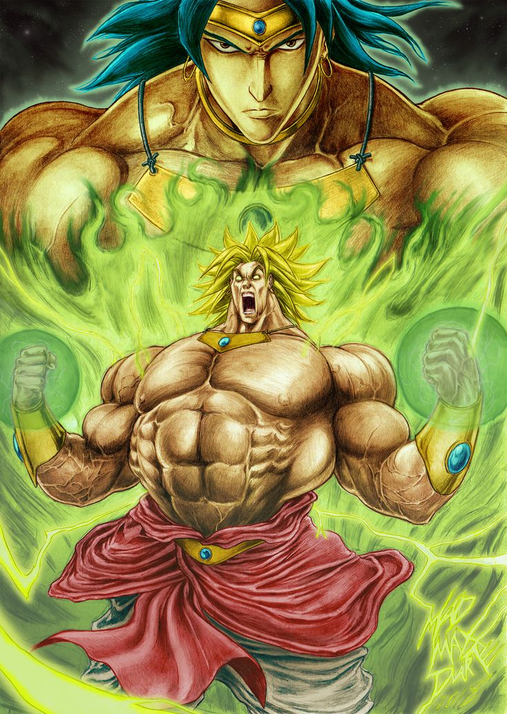
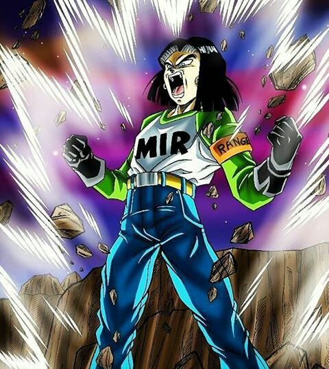

Esta série aparece recheada de longos combates com muita ação. Em Dragon Ball Z, as histórias possuem um clima mais sério que as de seu antecessor.
Dragon Ball Z teve uma audiência média no Japão de 20,5%.

A popularidade da série também é refletida por vários dados referentes a interações online que comprovaram seu impacto na internet.

Em seu auge de sucesso no Brasil, Dragon Ball Z sempre foi usado pela Globo para aumentar seus números na faixa infantil até 2012, e nos grandes tempos, chegava a até 20 pontos de audiência no IBOPE em plena 11h30 da manhã.